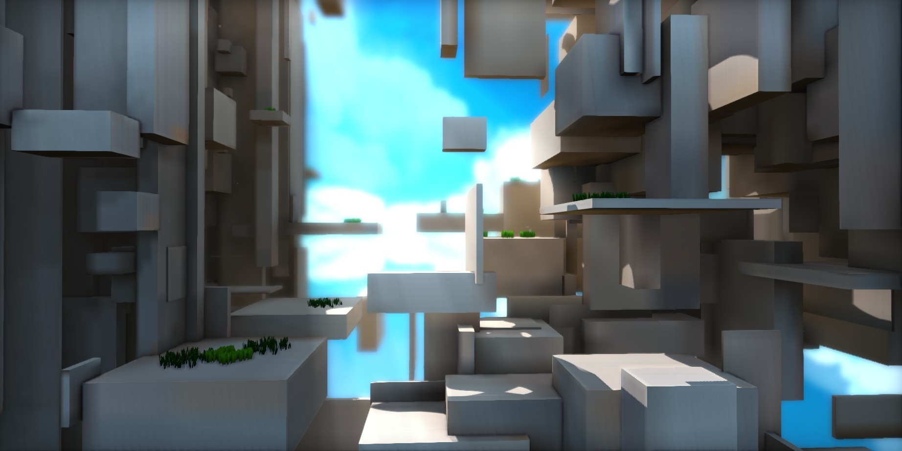
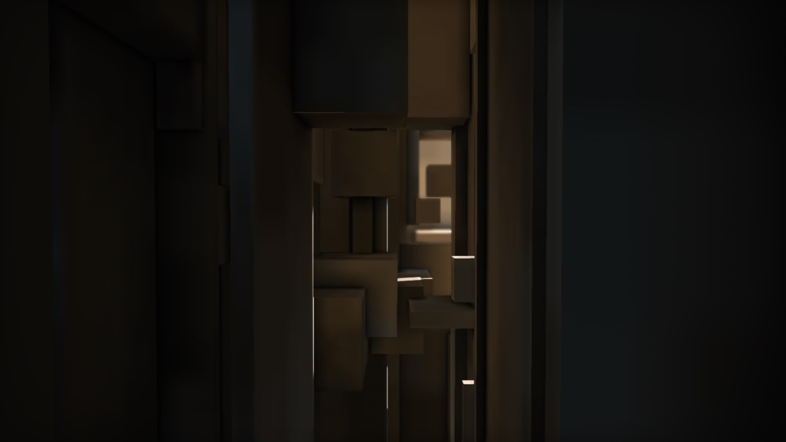
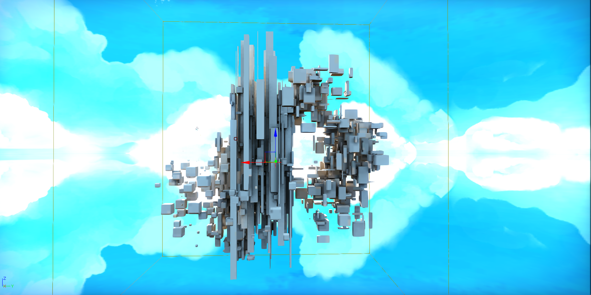
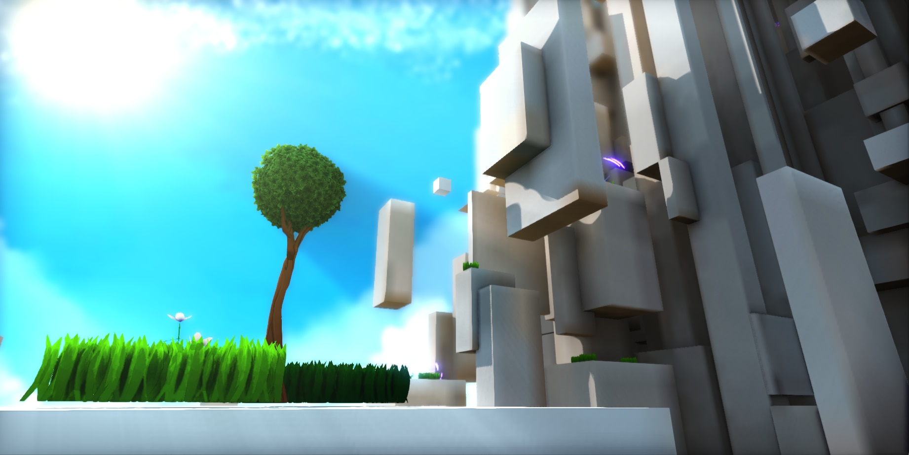

A couple of weeks ago, I released Altocubulus, another mod for A Hat in Time heavily inspired by my time working on Hatocubulus. It was made over the course of a few weeks in my spare time for the Summer Community Mod Jam, hosted by the Hat in Time discord.
 I spent a little bit of time familiarizing myself with Blender to try and create something similar in structure to the original Stratocubulus mod, and while I didn't get anywhere close, the results of my tinkering with python and transform/scale randomization created a space that was still fun to navigate and explore.
for i in range(0, 5):
for j in range(0, 5):
for k in range(0, 5):
flip = random.randint(0, 2)
if (flip == 0):
bpy.ops.mesh.primitive_cube_add(size=1, location=(i, j, k))
The scripting I ended up using in python was rather simplistic, simply creating what would have been, say, a 5x5x10 grid of cubes, with some randomization to alternate whether a cube was actually created during a given pass of the nested loops. Once the cubes were generated, I could select handfuls of the instances and move them around as I pleased, or I could make use of Blenders "Randomize Tranform" tool, found under the Object menu.
Perhaps the most fascinating aspect of this mod was discovering just how much impact the scaling of cubes had on gameplay. The center of the level structure features a tall column vertically stretched cobes, while the space surrounding it comprised of smaller cubes that were further spaced apart. It was fun to discover how the pace of gameplay would be slowed when entering the central structure as oppossed to the more quick decision making it would take to navigate the exterior sets of cubes.
Perhaps it was a result of being a part of the community jam, but the mod ended up being much more positiviely recieved than Hatocubulus. Despite the original mod being a huge source of inspiration to me, I was aware of some of the flaws it had that may have limited accessibility to some players. Even so, it was very motivational to get such great feedback, and I hope to make at least one more map like this one in the near future without the time constraints I had for the jam.
Anyway...